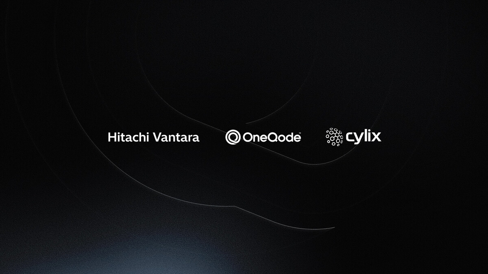

OneQode, Hitachi Vantara and Cylix: alliance for sovereign AI factories
The official 7 April 2026 release formalizes a OneQode-Hitachi Vantara-Cylix alliance to launch a Sovereign AI Factory initiative. The core signal is clear: deliver a full stack from infrastructure to managed AI operations while preserving jurisdictional control.

1. What is officially announced
The alliance announces sovereign AI infrastructure deployment across priority markets including Australia, Japan, Malaysia, and Singapore, with future expansion planned for the United States. The stated objective is to enable advanced AI capabilities while keeping full control over data, infrastructure, and compliance requirements.
2. Why this matters for sovereign AI
The model combines three layers that are often disconnected: infrastructure and low-latency backbone (OneQode), validated AI platform integration across compute-network-storage (Hitachi iQ), and end-to-end AI operationalization up to managed production services (Cylix). This reduces execution risk for regulated organizations that cannot rely on fragmented delivery chains.
3. Operational takeaway for organizations
For public and regulated operators, this release reinforces a practical trend: sovereign AI is less about a single model choice and more about running an architecture that can be governed locally across data, runtime, and legal obligations. Partner operating model selection is now a near-term strategic decision.
Prioritize a sovereign AI roadmap that links data jurisdiction, infrastructure architecture, and production operating model from day one.
Start scoping